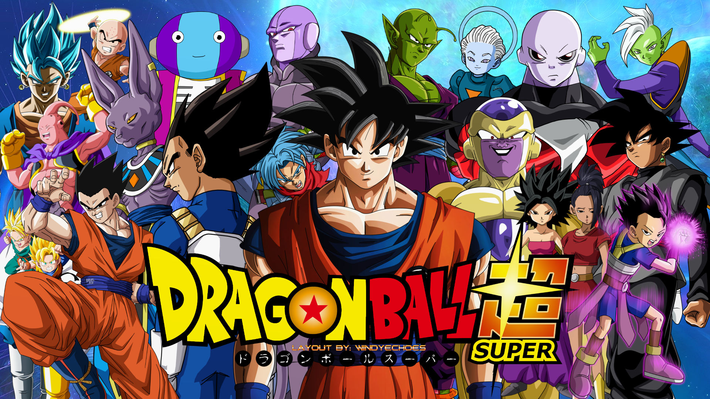

About Son Goku
Son Goku is a awesome guy! He protect the against any attacker no matter how strong they are. Goku always overcomes his power levels in order to protect his loved ones. He has developed multiple power stages called Super Sayajin. His best form is the blue Super Sayajin which is equal to the power of a god. Son Guko is always positiv and has good deeds, his mindset is ultimate. We can learn alot from him. He has a lot of friends aswell.
Goku and his friends
Powel levels
- Super Sayajin 1
- Super Sayajin 2
- Super Sayajin 3
- Super Sayajin 4
- Super Sayajin God
- Super Sayajin Blue
- Ultra Instinct
Friends
Son Goku has a lot of powerfull friends